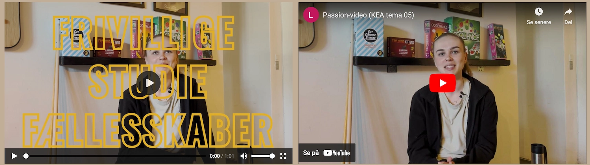
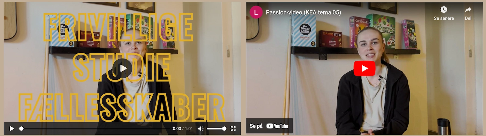

05 INDHOLDSITES

TEMA
Tema 05 var en gruppeopgave, som var opdelt i to opgaver: ‘Passionsite’ og ‘Virksomhedssite’. Fælles for dem begge var produktion af indhold til et site herunder præproduktion (5-skudsreglen, storyboard og interview forberedelse), selve produktionen samt postproduktion. I temaet fik vi erfaring med at interviewe, filme og optage ekstern lyd, og derefter bruge Premiere Pro og Audition til redigering. Vi arbejdede også med animeret vektorgrafik (Lottiefiles).
OPGAVE
Temaet’s første opgave var et passionsite. Her var det vigtigste at producere en video med en person, som har en passion. Sammen med en medstuderende interviewede jeg Celina, som har passion for studiefællesskaber. Det var også i denne opgave vi prøvede at lave vektorgrafik med After Effects, som vi implementerede som LottieFile på sitet.
Temaets store opgave gik ud på at redesigne en selvvalgt website ved hjælp af nogle af de færdigheder, som vi har erhvervet os i de foregående temaer. Vi samarbejdede med Frank’s Kro på Nørrebro, som vi besøgte i forbindelse med produktion af indhold til redesignet.
METODE
I temaet brugte jeg to måder at indsætte en video på en hjemmeside: video tag og Youtube-embed.
I
begge opgaver har vi brugt en LoffieFile i sitets hero-section, som er en metode til at fange
opmærksomhed. LottieFile
er en mere bæredygtig måde at implementere et element i bevægelse frem for f.eks. en video.
På dette tema blev vi introduceret for to nye brugertest: BERT og heuristisk test (eksperttest). I
min gruppe brugte vi
begge test (og herudover også de tidligere omtalte brugertest). BERT brugte vi til at undersøge,
hvordan brugerne
opfattede både virksomhedens eksisterende site og vores redesign. Her lærte vi vigtigheden af at
opsætte neutrale
bipolære akser og dermed ikke force brugeren til at vælge den positive frem for den negative.
I dét det var studiets første reelle gruppearbejde, var metoderne indenfor projektstyring både nye
og vigtige. Vi brugte
blandt andet metoderne Trello og Daily SCRUM, som er gode til at holde overblik gennem hele
processen. Første dag i
gruppearbejdet lavede vi en team-kontrakt. Vores teamkontrakt blev udfærdiget meget hurtigt og
overfladisk, og i løbet
af gruppearbejdet erfarede jeg, hvor vigtig en god team-kontrakt er. Jeg tager helt klart med
videre, at prioritere
team-kontrakten højere, så vi fra starten benytter metoden til at forventningsafstemme og lave
konkrete aftaler for hele
samarbejdet.
En anden metode vi brugte i samarbejdet om kodning af det fælles site var programmet GitHub, og her
er kommunikation
mellem gruppemedlemmerne væsentlig, for ikke at overskrive hinanden.
 
